LLD GUÍA DE DISEÑO
Esta guía establece el flujo de trabajo estándar para proyectar redes de fibra óptica eficientes. El objetivo es transformar una asignación inicial en un diseño constructivo viable, optimizando recursos, cumpliendo con criterios técnicos y asegurando la factibilidad en terreno.
Departamento de Ingeniería
Suport: Jailin Riveiro y Adriana Saladino
1Fase de Asignación y Criterios Iniciales
El éxito del diseño comienza con la correcta interpretación de la solicitud.
Entendimiento del correo: Análisis, interpretación y objetivos del proyecto
En el asunto del correo encontrarás tu número de asignación. Así mismo, se adjuntan enlaces para acceder a la carpeta con la documentación base necesaria para iniciar el proyecto:
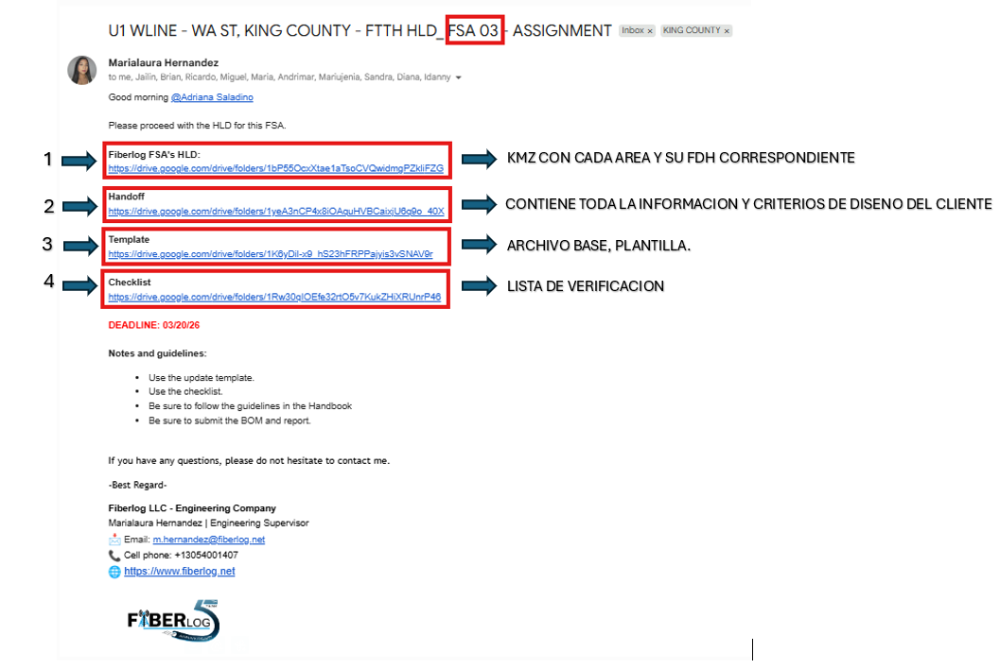
⚠️ IMPORTANTE
La estructura del correo puede variar, lo fundamental es dedicar el tiempo necesario a leer y comprender a fondo la asignación. Asegurarse de asimilar toda la información base es el primer paso crítico para el éxito del proyecto.
1-ÁREA DE TRABAJO:
El primer enlace contiene un archivo KMZ con todas las áreas del proyecto. Debes ubicar tu zona de trabajo según el número de asignación recibido por correo; cada área está identificada por colores y los nodos FDH tienen el número correspondiente. Por ejemplo, si tu asignación es FSA 03, tu área de trabajo es la de color rojo.
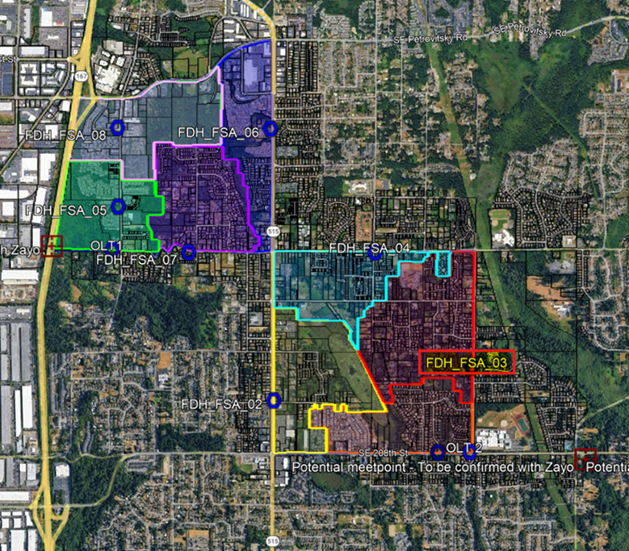
2. HANDOFF:Incluye la información y criterios de diseño del cliente (ejemplo KMZ y Excel de exigencias).
Intrucciones clave:
- Trabaja sobre una copia descargada para no alterar el archivo en línea.
- Verifica que estás utilizando la última actualización disponible.
- Si surge alguna duda tras analizar los puntos, validarla con tu manager antes de iniciar el diseño.
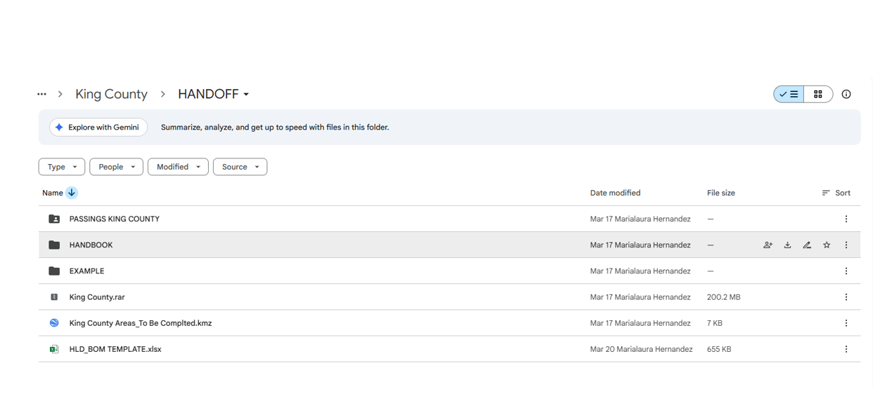
3-TEMPLATE:
Plantilla base donde realizaremos el dibujo. Aquí está precargado todo lo necesario para el dibujo y representación adecuada de nuestro proyecto. Esta plantilla puede estar en Cad, ArcGIS o Civil 3D, esto depende de lo que establezca el cliente.
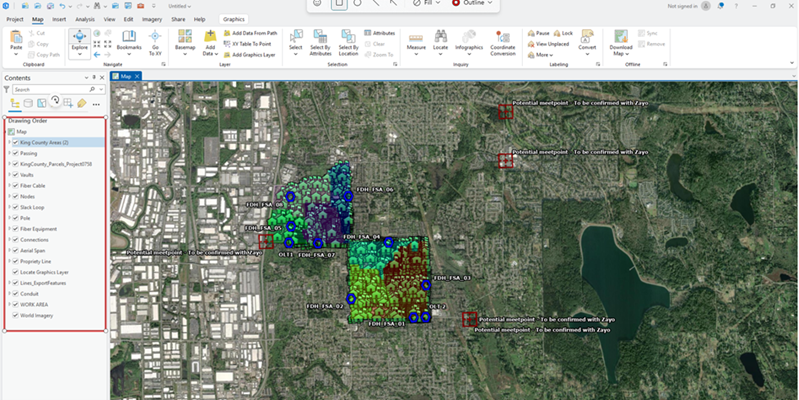
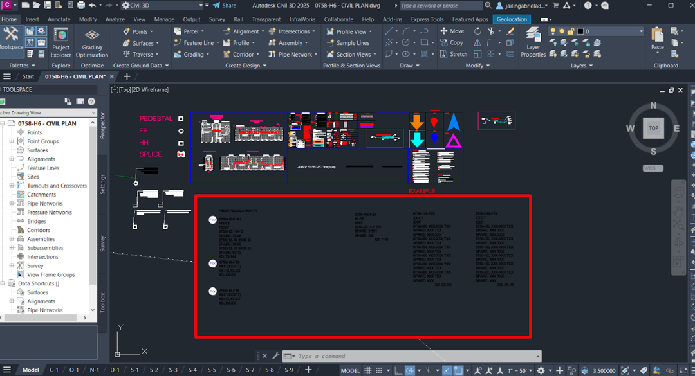
4-CHECKLIST:
Utiliza esta lista de verificación para asegurar el cumplimiento de cada punto y evitar retrasos en las entregas.
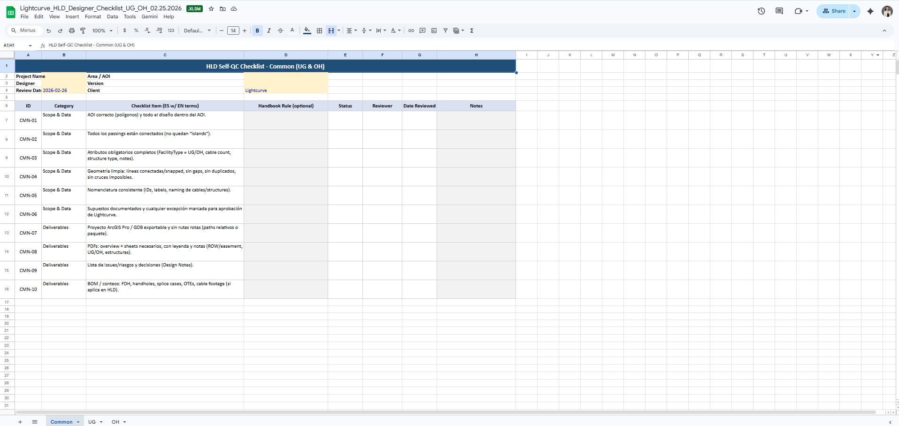
2Relevamiento Digital del Área
Antes de trazar, se debe validar la densidad demográfica.
Análisis en GIS
Para el conteo de unidades inmobiliarias mediante plataformas geográficas, contamos con una base de datos centralizada en Excel. Esta incluye la información GIS de cada área de operación. Solo debes navegar por las pestañas del archivo para ubicar el Estado en el que se encuentra tu proyecto.
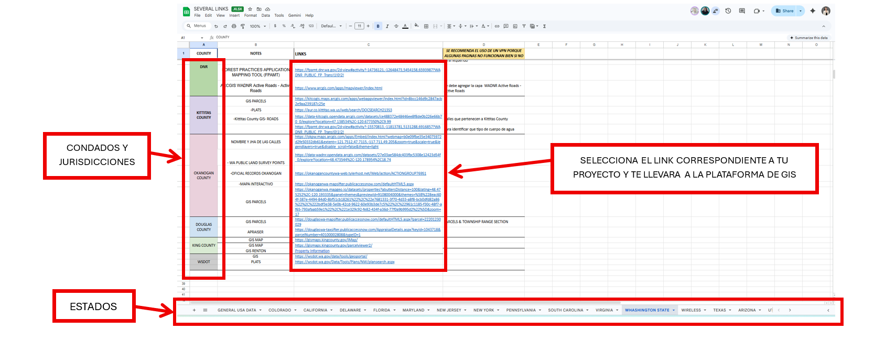
El siguiente paso será copiar una dirección desde el google map para ubicarte en la zona en la que está tu proyecto.
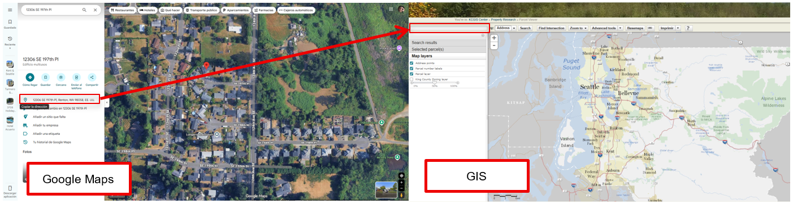
Ve a la pestaña que dice BASEMAP para activar el visor aereo, asi podrás ubicarte mejor.
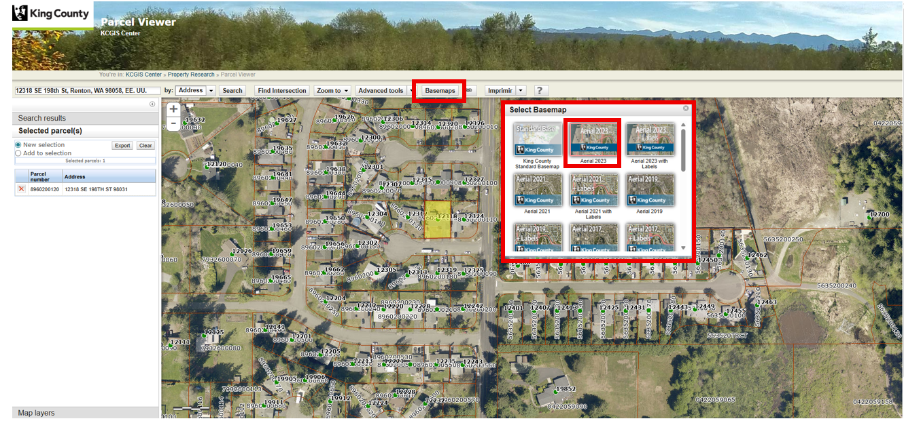
Validación de Usuarios
Comparación entre la base de datos teórica y la cantidad real de clientes potenciales (Passings). Tipos de unidades: (Haz clic en cada tarjeta para ampliarla)
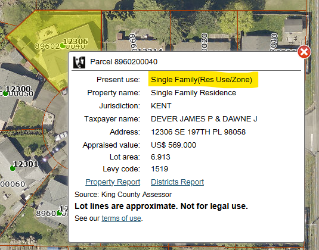
SINGLE FAMILY
1 Familia / 1 Hilo
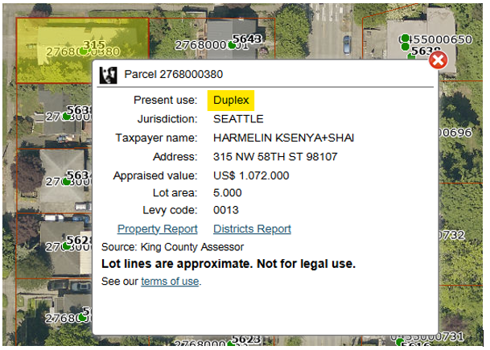
DUPLEX
2 Familias / 2 Hilos
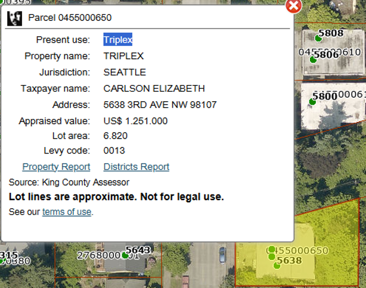
TRIPLEX / FOURPLEX
3-4 Familias / 3-4 Hilos
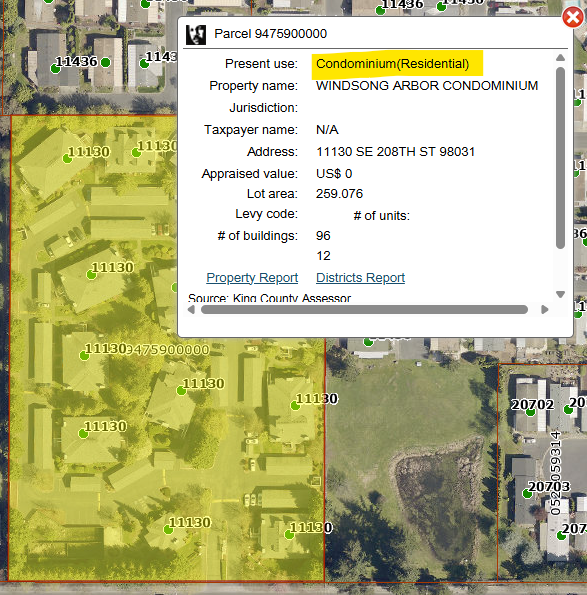
MDU
Condominios / +12 Hilos
⚠️ ATENCIÓN: Discrepancias en GIS
Existen casos donde el GIS identifica 'Single Family', pero en Street View se observan dos viviendas y estacionamientos independientes. Ante discrepancias, consultar con el mánager.

Otros usos de terreno:
Comercial, Industrial, Institucional, Recreacional, Land. Se toman en cuenta dependiendo del criterio que establece el cliente.
Fielding
Levantamiento técnico en sitio si el GIS no está actualizado. Un equipo especializado recolecta fotos y videos presencialmente.
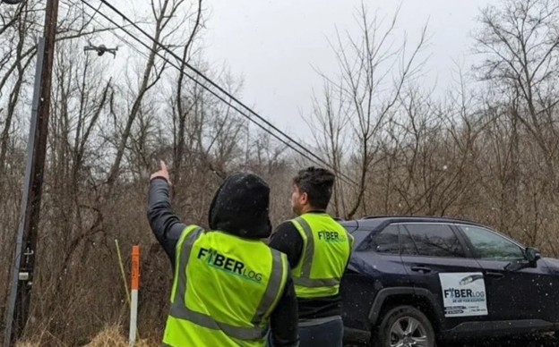
Observación: Limpieza de passing para obtener el número real de unidades.
3Evaluación de Campo
Simula una evaluación de campo real. Completa los 3 pasos para obtener el veredicto del área.
Paso 1 · Relevamiento de Utilidades Existentes
Marca las utilidades que detectaste en el área de trabajo. Cada una identificada afecta el trazado.
⚠️ CONFLICTO DETECTADO – Manhole
No proyectar un Handhole (HH) directamente sobre un Manhole preexistente. Mantener siempre distancia de seguridad mínima y redirigir el trazado.
Utilidades detectadas: 0 de 5
Paso 2 · Obstáculos de Accesibilidad e Infraestructura
Marca los elementos presentes en el área. Está prohibido instalar estructuras nuevas sobre cualquiera de estos.
Sin obstáculos marcados — zona despejada.
Paso 3 · Derecho de Vía (ROW) y Propiedad Privada
Usa el slider para ajustar el retroceso de seguridad de la estructura respecto a la línea de propiedad. El ROW es el criterio más crítico — cualquier invasión implica rechazo automático.
Veredicto del área
Resumen de hallazgos
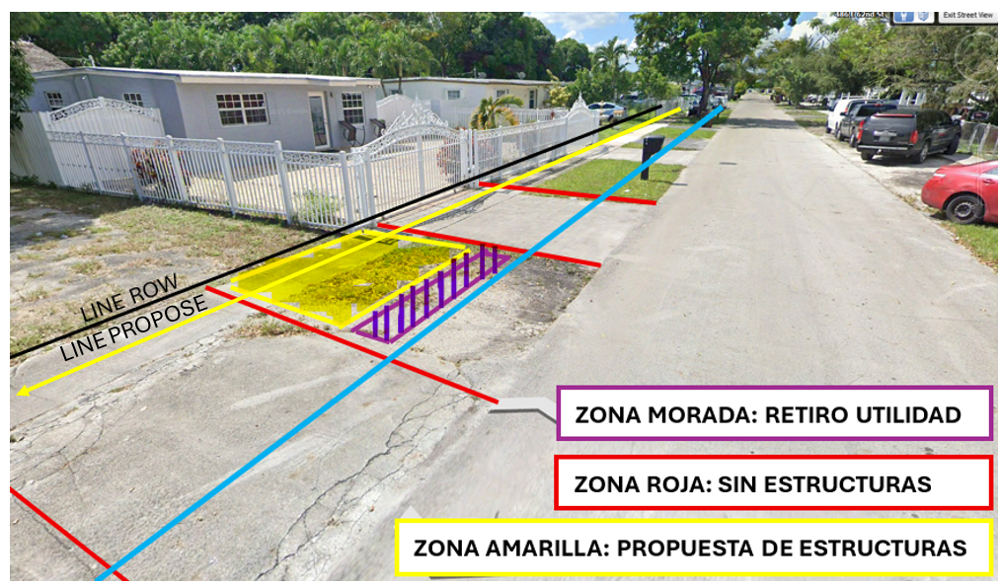
Determinación del Método de Despliegue
Regla de Oro
Siempre se debe priorizar la red aérea por su bajo costo de construcción frente a la opción subterránea (UG).Sin embargo, se debe tomar en cuenta que esto tambien depende de las exigencias del cliente o del mercado en el que se este trabajando.
Aéreo
Método preferido. Se realiza un registro detallado de los postes existentes en el área y se trasladan sus coordenadas a la plantilla de diseño. Rápido de ejecutar y de menor costo constructivo.
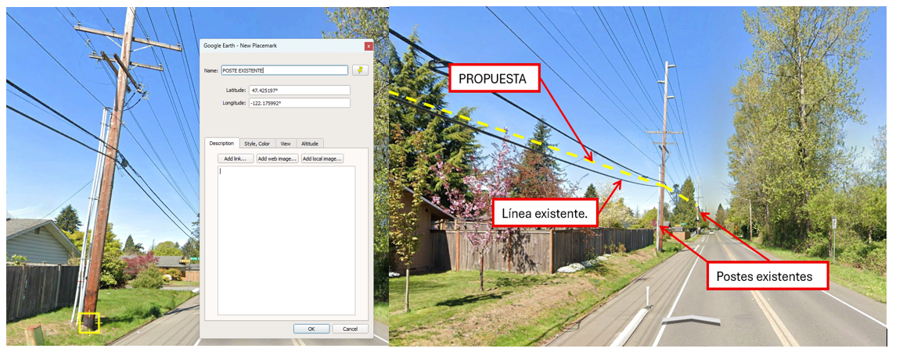
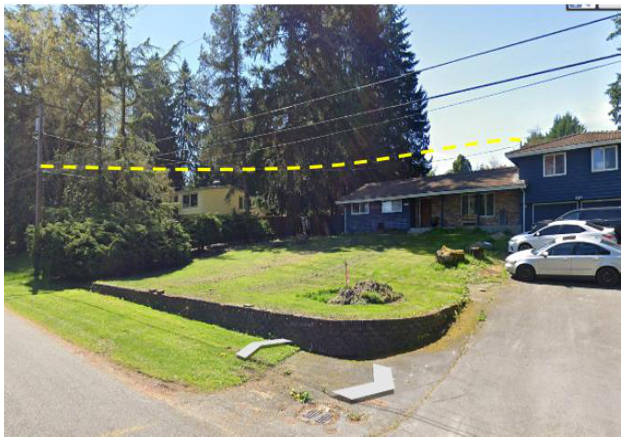
Subterráneo
Costo 5 a 10 veces mayor que el aéreo. Incluye Trenching, instalación de Handholes (HH) y reparación de aceras. Se opta por UG únicamente cuando no existen postes en el área o la normativa del cliente lo exige.
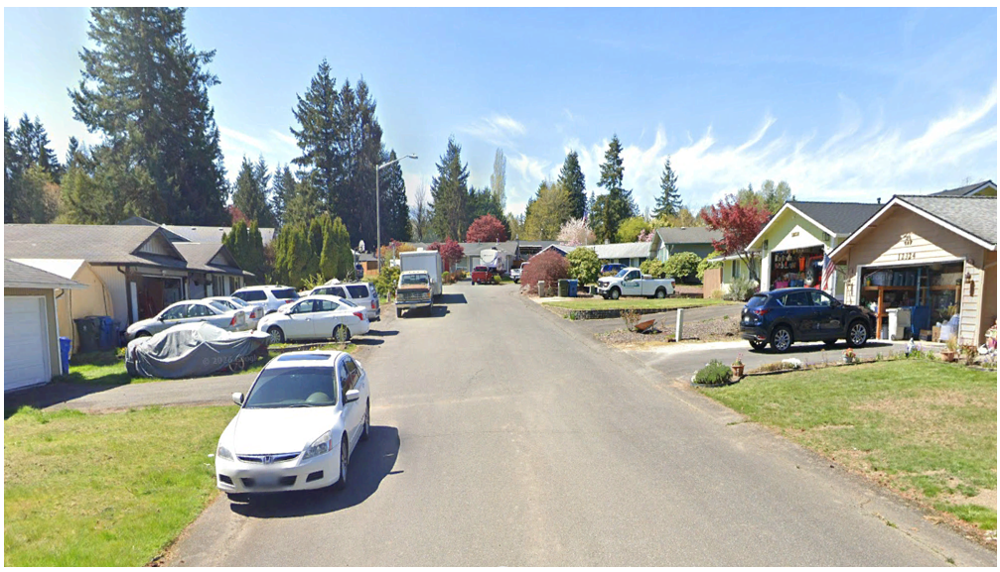
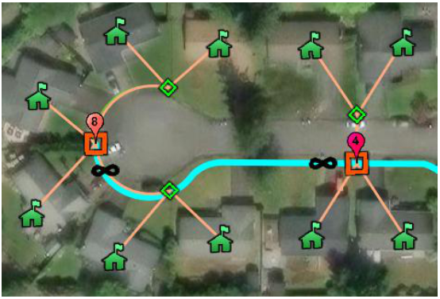
Mixto
Cuando la propuesta en general debe usar los dos métodos constructivos, tanto UG como Aéreo, debido a que no hay existencia de postes en toda el área. Se combina lo mejor de ambos según la disponibilidad de infraestructura en cada tramo.
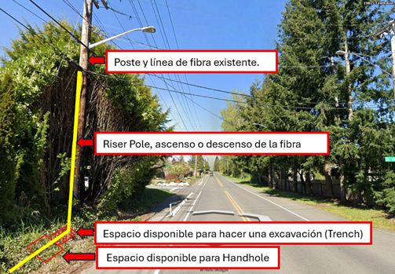
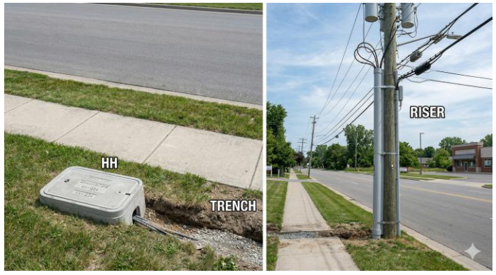
4 Ingeniería de Red: Agrupaciones y FDH
Segmentación por Polígonos
Consiste en la agrupación técnica de los passings (viviendas) priorizando la cercanía geométrica. Se definen grupos de 4, 6, 8 y 12 usuarios por cada Terminal óptico.
* Se recomienda siempre dejar un margen de reserva (spare) según el criterio del cliente.
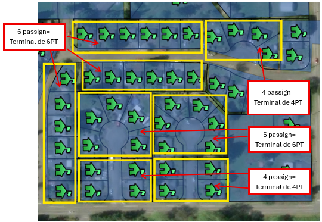
Figura 4.1: Ejemplo de agrupación técnica en polígonos.
Emplazamiento y Rutas
La ruta óptima se ajusta a la realidad del terreno. En escenarios aéreos se usan postes existentes; en UG se depende del espacio en el Derecho de Vía (ROW).
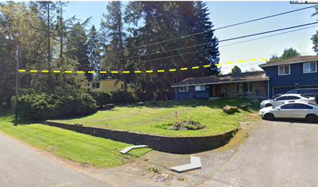
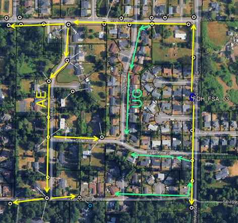
FDH_SELECTOR.exe
// El FDH es el punto de gestión central para el vecindario.
Gabinete Recomendado
-- CT
Ubicación Estratégica del FDH
Se ubican en lugares públicos o servidumbres (easements). Se debe evitar: zonas de agua, canales, drenajes (ditch) o esquinas peligrosas.
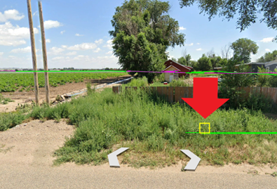
Emplazamiento adecuado en easement público
5 Terminales y Conexiones de Usuario (Drops)
Terminales
La ubicación del terminal es el factor clave para la eficiencia. Debe ubicarse en el punto medio del grupo de usuarios para optimizar el presupuesto óptico y reducir costos de materiales.
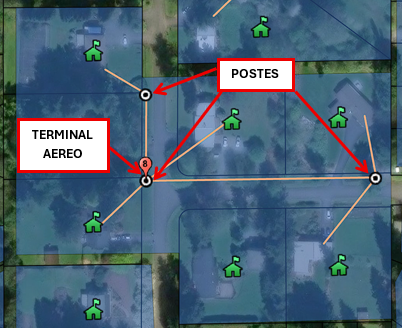
Figura 5.1: Centralización en el Centro de Polígono.
Prohibiciones de Ubicación (HH)
Es crítico evitar instalar Handholes en zonas que comprometan la accesibilidad o la seguridad vial.
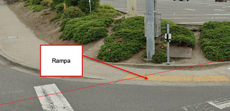
RAMPAS ADA
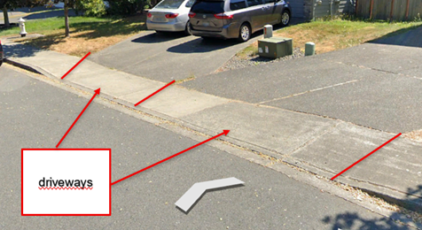
DRIVEWAYS
Aplicaciones del Handhole (HH)
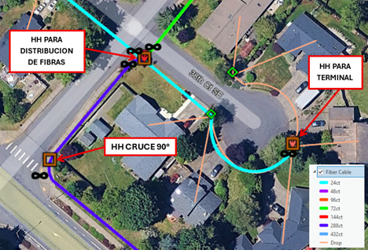
Flowerpots: Transición Final
El Flowerpot es el punto de transición final entre la red subterránea y la acometida del cliente, usualmente ubicado en el Property Line (PL).
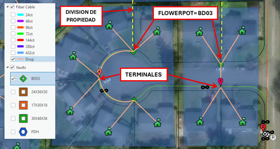
Tipo cuadrado
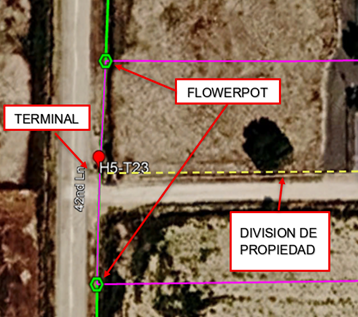
Tipo redondo
7. Distribución de Fibra
En fibra óptica, el "tamaño" del cable no se refiere a su grosor externo, sino a la cuenta de hilos (Fiber Count). Los cables de distribución se agrupan en tubos holgados (loose tubes) que suelen contener 6, 12 o 24 fibras cada uno. Ellos se pueden clasificar en:
Cables Feeder
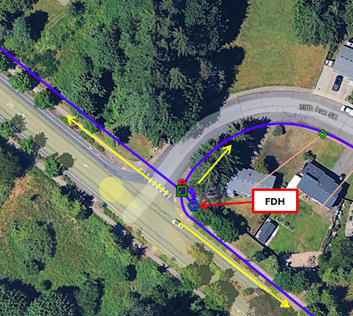
Alta capacidad (desde 48 hasta 288 fibras o más). Es el cable principal que nos llevará la carga a lo que sería el gabinete (FDH).
Cables de Distribución
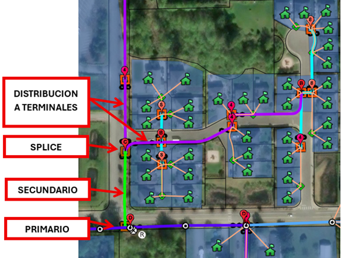
Capacidad media (de 12 a 288 fibras). Es el cable secundario que nos lleva la carga a los terminales.
Cables Drop
Capacidad mínima (1 o 2 fibras), usados para la conexión final al cliente. Es el cable terciario el cual sería el que va directo a la vivienda, hay que tener en cuenta que dependiendo cada criterios del cliente, se puede dibujar y representar de distintas maneras, en algunos casos se dibuja el tipo de construcción y el drop desde el terminal hasta el NID, como en otros solo se dibuja del terminal al NID como referencia.
Tipos de cable existente (según cliente):
Tenemos que tener en cuenta que para saber el tamaño de cable a usar, es necesario saber la cantidad de passing (personas conectadas) y cantidad de terminales por agrupación incluyendo los spare (fibras de reserva).
EJEMPLO PRÁCTICO
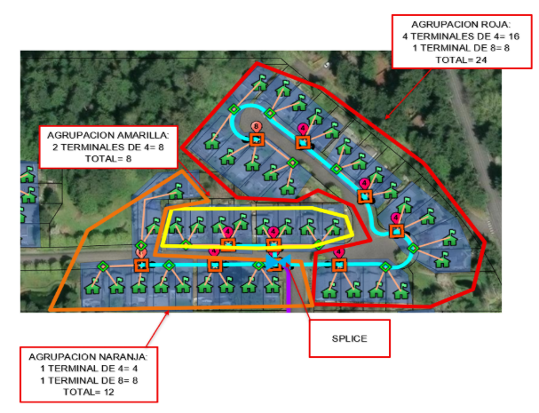
Ejemplo: La línea color cyan sería nuestra fibra 24CT y la morada de 48 ct, podemos observar que se encuentran 3 agrupaciones roja, amarilla y naranja, que salen del splice azul señalado en la imagen. Las siguientes agrupaciones se clasifican en lo siguiente:
Agrupación Roja
Tiene 4 terminales de 4 serían 4x4=16 y un terminal de 8, sumamos el total de los dos y nos da 16+8=24. elegimos un cable de 24.
Agrupación Amarilla
Tiene 2 terminales de 4 serían 2x4=8, el cable mínimo que se manejaba en ese mercado era el de 24ct, por ende se usa uno de 24.
Agrupación Naranja
Tiene 1 terminal de 4 y de 8 serían 4+8=12, por ende igualmente sería un cable de 24ct.
Cálculo Final de Alimentación
Para elegir el cable que alimentará las 3 agrupaciones, sumamos los 3 totales que nos están dando:
Cálculo Final de Alimentación
Roja
Amarilla
Naranja
Total Hilos
44Selección Estándar
NOTA: Para elegir el cable, sumamos los hilos necesarios para alimentar cada terminal y añadimos un margen de seguridad.
8 Splice y Coils
Splice (Empalme)
Es la unión permanente de dos hilos de fibra para que la luz pase de uno a otro con la menor pérdida de señal posible. Equivale a "soldar" cables con precisión microscópica.
Tipos de Splice
Clasificados según su uso, tipo de cable y criterios específicos del cliente.
Coils / Slack loop
"No es cable que sobró, es una decisión estratégica de diseño."
Tamaños Estándar (Pies)
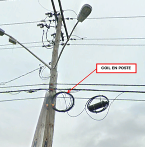
Coil en Poste
Reserva técnica colgada deliberadamente en el tendido aéreo para permitir desplazamientos, reparaciones o inserción de nuevos elementos sin re-tirar cable.
9 Splitters (Divisores Ópticos)
¿Qué es un Splitter?
Es un componente pasivo que permite dividir la fibra principal que entra al gabinete (FDH) para repartirla en múltiples salidas. Es el corazón de la red PON (Passive Optical Network).
Relaciones Comunes:
SPLITTER_CAPACITY_SIMULATOR
// Selecciona un tipo de splitter para ver su impacto en Passings
32
Hogares Conectados
En un splitter 1:32, una señal de entrada se divide en 32 señales idénticas para 32 casas diferentes.
Configuración Real dentro del FDH
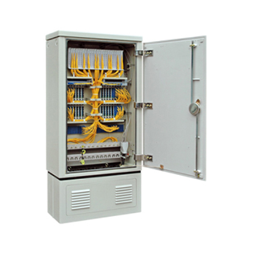
La cantidad de splitters necesarios depende directamente del total de Passings proyectados en el área.